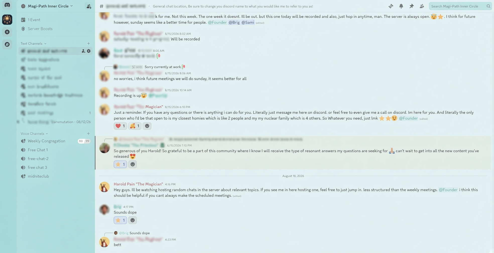

Regular, direct access to me. Weekly live calls where we talk through your path. A place to connect with other people who are serious about ascending in this lifetime.
You're not here because something's broken.
You're here because you already know there's more — more to reality than what everyone else calls normal, more available to you than what you've been taught to expect.
You've felt it: a synchronicity, a moment of clarity that didn't come from anywhere ordinary. You don't need someone to convince you that's real. You need somewhere to actually go deeper with it — real esoteric knowledge, applied, with people who take it as seriously as you do.
The people already here are really doing it. Not talking about it. Doing it.
I host this on Discord — chat rooms, forums, and resource sharing between members, all in one place. Once a week, we go deep together on one real topic: how to actually use your own creative energy as a spiritual tool, the occult tactics a specific artist used to gain their power and image, one of the seven Curses broken down start to finish, real sacred knowledge applied to your own path forward — not locked to one tradition. You ask questions in real time, in the room, and we work through them together.
All in service of one goal — spiritual ascension. Learning to direct your own life force to create the reality you want, and fully embody the Magician: your higher self, at full capacity.
Every week, one real topic, taught live: how to use your own creative energy as a spiritual tool, the occult tactics a specific artist used to gain their power, one of the seven Curses broken down start to finish, real sacred knowledge applied to your own path — not locked to one tradition. Real questions, answered in the room, not a pre-recorded lecture. Every call is saved after, so missing one live doesn't mean losing it.
Inside the Discord, members share their own findings and interpretations, support each other's growth, and genuinely show up for each other along the way — a real place to belong while you grow.

A real conversation, inside the actual Discord.
I'll be honest with you: this isn't priced for a crowd, and that's not about excluding anyone — it's because real depth only happens in a room small enough that everyone's actually known. This works best with people who are genuinely ready to go deep together, not just watch from a distance.
How is this different from your free content?
My reels and videos are the trailer. This is live, in real time, with room for actual back-and-forth — you can ask your own question about your own situation and get answered directly, not just watch a general breakdown made for everyone.
Do I need to already know this stuff?
No. Every call is built to teach the concept from the ground up before going deep. You don't need a background in the esoteric to follow along — you just need to actually show up.
What if I miss a live call?
Every call is recorded and saved, so you never lose access to it — but the live version is where you actually get to ask your own questions and be part of the room in real time.
I've never done anything like this before.
That's completely okay — everyone starts somewhere. You don't need to arrive with any experience. You just need to be willing to begin, and the rest of us will be right here with you.
Founding spots close August 31st. Once they're gone, so is this price, and so is having me directly in your corner — it's just part of being in the room with everyone else here.
Thanks for being here.
That's completely okay. Here's a free way to start.
Tell it who you want to become — not a goal, an identity. It draws eight cards across four steps: your archetype, what's blocking you, the path forward, and who you become. You'll get a personalized reading, plus a free guided meditation to begin that shift today.